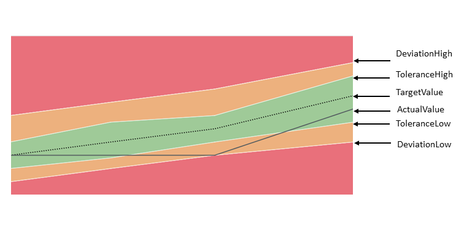
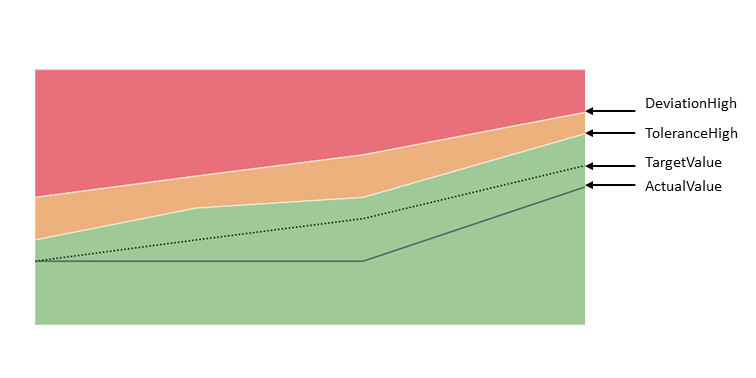

For more information about this control, see the API Reference and the sample in the Demo Kit.
By using the chartType property Area of the
UI.Chart annotation the corresponding
SmartAreaMicroChart control is rendered. The
entitySet attribute must be specified to use the control. This
control property is used to fetch the corresponding annotations. Based on this, the
AreaMicroChart will be rendered; it can also be used to fetch the
actual chart data.
The control can also be used directly (without creating a SmartMicroChart
control).
Binding
The SmartAreaMicroChart control supports only
enableAutoBinding = true. This means it
should be bound to only one entitySet, and should get a
navigation property as a chartBindingPath to an entitySet (for the relative binding)
or else the entitySet property will be used for the absolute
binding.
Colors of the Chart (Criticality)
The color of the chart is defined due to the thresholds by using the
CriticalityCalculation property of the
UI.DataPoint annotation and the
ImprovementDirection property.
Setting the color directly via the Criticality property of the
UI.DataPoint annotation is not supported by
SmartAreaMicroChart.
The following directions are supported:
Target-oriented:

Minimize-oriented:

Maximize-oriented:
For more information about the colors in the chart, see the sample in the Demo Kit.
Labels, formatting and label colors of the chart
The control provides labels that are displayed at the top and bottom of the chart. You can control the labels themselves, as well as the color of the labels, by using annotations:
Title, Description and UnitOfMeasure
The control provides the Title,
Description or UnitOfMeasure
values retrieved from the annotations. If needed, the application can create a
corresponding chartTitle, chartDescription or
unitOfMeasure (of type sap.m.Label)
association. Then, the information will be read from the annotation document and it
will be set as the text property of the
sap.m.Label.
Title and Description
For the Title and Description
properties of the Chart annotation both
String and Path are supported:
<PropertyValue Property="Title" Path="ChartTitle" /><PropertyValue Property="Title" String="ChartTitle" />
Only the Title and Description properties of the Chart annotation are taken into account (not these of the DataPoint annotation).
For the SmartAreaMicroChart control, the
Title, Description and
UnitOfMeasure have the same binding context as
the chart itself (either chartBindingPath or
entitySet).
For more information about the supported annotation terms ISOCurrency and Unit, see http://docs.oasis-open.org/odata/odata/v4.0/os/vocabularies/Org.OData.Measures.V1.xml.
The control takes into account only the
measure annotation for the
entityType property that is addressed by the
Value property of the DataPoint
annotation. In the following example, the Value property of
the DataPoint points to the Price
property in the EntityType
(Path="Price"). This means that
the control (Path="Currency") uses
the measure annotation with
Target="AmcNamespace.StockPrice/Price":
<EntityType Name="StockPrice"> .... <Property Name="Currency" Type="Edm.String" /> </EntityType> <Annotation Term="UI.DataPoint" Qualifier="AreaChartDataPoint"> <PropertyValue Property="Value" Path="Price" /> </Annotation>
<Annotations xmlns="http://docs.oasis-open.org/odata/ns/edm" Target="AmcNamespace.StockPrice/Price" > <Annotation Term="MEASURES.ISOCurrency" Path="Currency"> </Annotation> </Annotations>